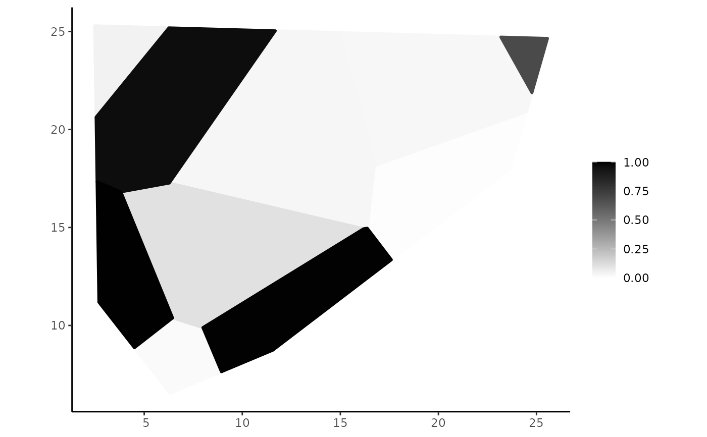
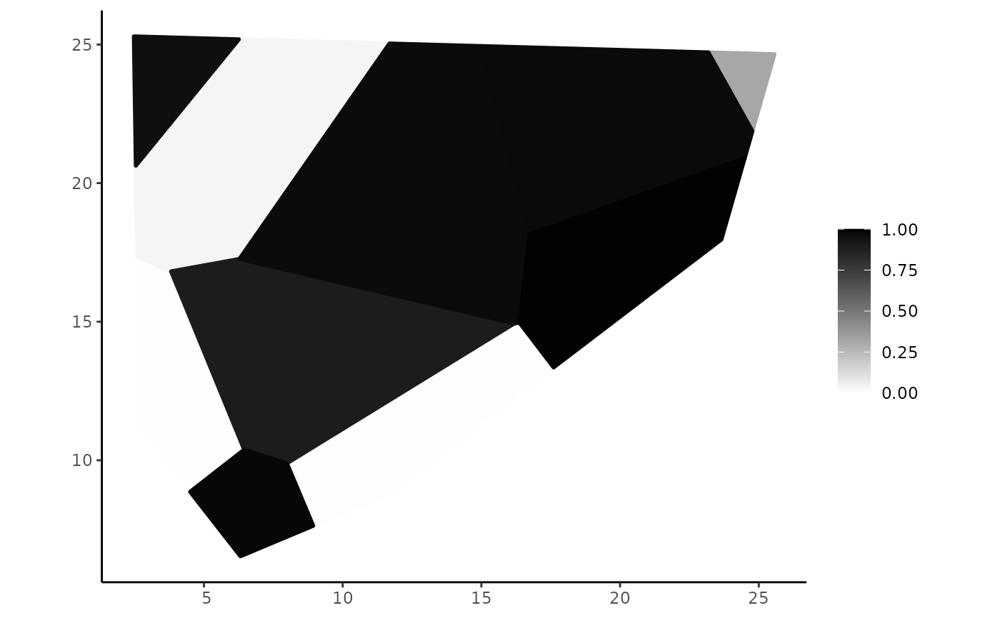

Compute fuzzy topological relationships
Source:R/fuzzy_topological_relations.R
fsr_topological_relationships.RdFuzzy topological relationships are implemented by spatial plateau topological relationships. A fuzzy topological relationship expresses a particular relative position of two spatial plateau objects. Such a topological relationship determines the degree to which it holds for any two spatial plateau objects by a real value in the interval [0, 1].
Usage
spa_overlap(pgo1, pgo2, itype = "min", ret = "degree", ...)
spa_meet(pgo1, pgo2, itype = "min", ret = "degree", ...)
spa_disjoint(pgo1, pgo2, itype = "min", ret = "degree", ...)
spa_equal(pgo1, pgo2, utype = "max", ret = "degree", ...)
spa_inside(pgo1, pgo2, utype = "max", ret = "degree", ...)
spa_contains(pgo1, pgo2, utype = "max", ret = "degree", ...)Arguments
- pgo1
A
pregionobject.- pgo2
A
pregionobject.- itype
A character value that indicates the name of a function implementing a t-norm. The default value is
"min", which is the standard operator of the intersection.- ret
A character value that indicates the return type of the fuzzy topological relationship. The default value is
"degree"and other possible values are"list"and"bool".- ...
<
dynamic-dots> Ifret = "bool", two additional parameters have to be informed, as described below.- utype
A character value that indicates the name of a function implementing a t-conorm. The default value is
"max", which is the standard operator of the union.
Details
These functions implement the spatial plateau topological relationships between plateau region objects. The key idea of these relationships is to consider point subsets resulting from the combination of spatial plateau set operations and spatial plateau metric operations on spatial plateau objects for computing the resulting degree. The resulting degree can be also interpreted as a linguistic value.
The spatial plateau topological relationships are implemented by the following functions:
spa_overlap()computes the overlapping degree of two plateau region objects. Since it uses the intersection operation, a t-norm operator can be given by the parameteritype. Currently, it can assume"min"(default) or"prod".spa_meet()computes the meeting degree of two plateau region objects. Similarly tospa_overlap, a t-norm operator can be given by the parameteritype.spa_disjoint()computes the disjointedness degree of two plateau region objects. Similarly tospa_overlapandspa_meet, a t-norm operator can be given by the parameteritype.spa_equal()computes how equal are two plateau region objects. Since it uses the union operation, a t-conorm operator can be given by the parameterutype. Currently, it can assume"max"(default).spa_inside()computes the containment degree ofpgo1inpgo2. Similarly tospa_equal(), a t-conorm operator can be given by the parameterutype.spa_contains()changes the order of the operationspgo1adpgo2when invokingspa_inside().
The parameter ret determines the returning value of a fuzzy topological relationship.
The default value is "degree" (default), which indicates that the function will return a value in [0, 1] that represents the degree of truth of a given topological relationship.
For the remainder possible values, the functions make use of a set of linguistic values that characterize the different situations of topological relationships.
Each linguistic value has an associated membership function defined in the domain [0, 1].
The fsr package has a default set of linguistic values. You can use the function spa_set_classification() to change this set of linguistic values.
The remainder possible values for the parameter ret are:
ret = "list"indicates that the function will return a named list containing the membership degree of the result of the predicate for each linguistic value (i.e., it employs the membership functions of the linguistic values).ret = "bool"indicates that the function will return a Boolean value indicating whether the degree returned by the topological relationship matches a given linguistic value according to an evaluation mode. The evaluation mode and the linguistic values have to be informed by using the parameterseval_modeandlval, respectively. The possible values foreval_modeare:"soft_eval","strict_eval","alpha_eval", and"soft_alpha_eval". They have different behavior in how computing the Boolean value from the membership function of a linguistic value. See the documentation of the functionssoft_eval(),strict_eval(),alpha_eval(), andsoft_alpha_eval()for more details. Note that the parameterlvalonly accept a character value belonging to the set of linguistic values that characterize the different situations of topological relationships.
References
Underlying concepts and formal definitions of spatial plateau topological relationships and fuzzy topological relationships are respectively introduced in:
Examples
library(tibble)
library(sf)
set.seed(456)
# Generating some random points to create pgeometry objects by using spa_creator()
tbl = tibble(x = runif(10, min= 0, max = 30),
y = runif(10, min = 0, max = 30),
z = runif(10, min = 0, max = 50))
# Getting the convex hull on the points to clip plateau region objects during their constructions
pts <- st_as_sf(tbl, coords = c(1, 2))
ch <- st_convex_hull(do.call(c, st_geometry(pts)))
pregions <- spa_creator(tbl, base_poly = ch, fuzz_policy = "fcp", k = 2)
plot(pregions$pgeometry[[1]])

plot(pregions$pgeometry[[2]])

# \dontrun{
# Showing the different types of returning values
spa_overlap(pregions$pgeometry[[1]], pregions$pgeometry[[2]])
#> [1] 0.03952635
spa_overlap(pregions$pgeometry[[1]], pregions$pgeometry[[2]], ret = "list")
#> $superficially
#> [1] 0.1976317
#>
#> $moderately
#> [1] 0
#>
#> $completely
#> [1] 0
#>
spa_overlap(pregions$pgeometry[[1]], pregions$pgeometry[[2]], ret = "bool",
eval_mode = "soft_eval", lval = "mostly")
#> logical(0)
## Examples for evaluating the other fuzzy topological relationships
spa_meet(pregions$pgeometry[[1]], pregions$pgeometry[[2]], ret = "list")
#> $superficially
#> [1] 0.1976317
#>
#> $moderately
#> [1] 0
#>
#> $completely
#> [1] 0
#>
spa_disjoint(pregions$pgeometry[[1]], pregions$pgeometry[[2]], ret = "list")
#> $superficially
#> [1] 0
#>
#> $moderately
#> [1] 0.1976317
#>
#> $completely
#> [1] 1
#>
spa_equal(pregions$pgeometry[[1]], pregions$pgeometry[[2]], ret = "list")
#> $superficially
#> [1] 0.3952635
#>
#> $moderately
#> [1] 0
#>
#> $completely
#> [1] 0
#>
spa_inside(pregions$pgeometry[[1]], pregions$pgeometry[[2]], ret = "list")
#> $superficially
#> [1] 0
#>
#> $moderately
#> [1] 1
#>
#> $completely
#> [1] 0.5771336
#>
spa_contains(pregions$pgeometry[[1]], pregions$pgeometry[[2]], ret = "list")
#> $superficially
#> [1] 1
#>
#> $moderately
#> [1] 0
#>
#> $completely
#> [1] 0
#>
# }